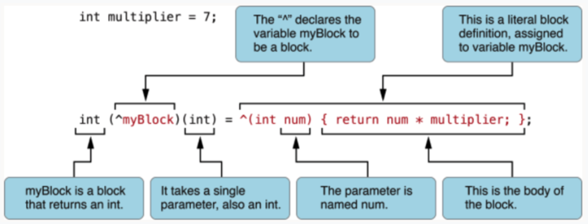

block 是 C 语言的扩充功能，也被称为带有自动变量(局部变量)的匿名函数。block 在网络请求的回调中起着举足轻重的作用。下面就来一步步的探索它使用方法。
完整的 block 语法是如下形式：block 的声明格式：
1 2 3 4 返回值类型 (^blockName)(参数列表); // block的声明 int (^sumblock)(int arg1, int arg2); void (^blockName)(int arg1, int arg2)
block 的定义格式
1 2 返回值类型 (^block变量名)(形参列表) = ^(形参列表) { };
声明并使用 block^ 操作符声明 block 变量，^ 表示是一个 block 的开始。block 的 body 体在 { }之内。例如：
1 2 3 4 int multiplier = 7; int (^myblock)(int) = ^(int num) { return num * multiplier; };
block 可以使用“在其定义作用范围内的”变量；如果你声明了一个 block 变量，可以像函数一样使用它。
block的用法 无参数无返回值的 block
1 2 3 4 void (^blockName)() = ^{ NSLog(@"无参数,无返回值的block"); }; blockName();
有参数无返回值的 block
1 2 3 4 void (^blockName)(int a, int b) = ^(int a, int b) { NSLog(@"%d + %d = %d",a,b,a+b); }; blockName(10,10);
有参数有返回值的 block
1 2 3 4 5 int (^sumblock)(int a, int b) = ^(int a, int b){ return a + b; }; int sum = sumblock(10,10); NSLog(@"sum = %d",sum);
block 结合 typedef 使用
1 2 3 4 5 6 7 8 9 10 11 12 13 14 typedef int (^sumblock)(int, int); interface ViewController () property (nonatomic, copy, nonnull) sumblock sumblock; @end @implementation ViewController - (void)viewDidLoad { [super viewDidLoad]; self.sumblock = ^(int a, int b) { return a + b; }; NSLog(@"sum = %d",self.sumblock(10,10)); }
block 作为函数参数block 作为 C 函数参数
1 2 3 4 5 6 7 8 9 10 11 12 13 14 15 16 17 18 // 1.定义一个形参为block的C函数 void useblockForC(int(^ablock)(int, int)) { NSLog(@"result = %d", ablock(300,200)); } // 2.声明并赋值定义一个block变量 int(^addblock)(int, int) = ^(int x, int y){ return x+y; }; // 3.以block作为函数参数,把block像对象一样传递 useblockForC(addblock); // 将第2点和第3点合并一起,以内联定义的block作为函数参数 useblockForC(^(int x, int y) { return x+y; });
block 作为 OC 函数参数
1 2 3 4 5 6 7 8 9 10 11 12 13 14 15 16 17 18 // 1.定义一个形参为block的OC函数 - (void)useblockForOC:(int(^)(int, int))ablock { NSLog(@"result = %d", ablock(300,200)); } // 2.声明并赋值定义一个block变量 int(^addblock)(int, int) = ^(int x, int y){ return x+y; }; // 3.以block作为函数参数,把block像对象一样传递 [self useblockForOC:addblock]; // 将第2点和第3点合并一起,以内联定义的block作为函数参数 [self useblockForOC:^(int x, int y){ return x+y; }];
block 是 C 语言的扩充功能，也被称为带有自动变量(局部变量)的匿名函数。block 在网络请求的回调中起着举足轻重的作用。下面就来一步步的探索它使用方法。
完整的 block 语法是如下形式：block 的声明格式：
1 2 3 4 返回值类型 (^blockName)(参数列表); // block的声明 int (^sumblock)(int arg1, int arg2); void (^blockName)(int arg1, int arg2)
block 的定义格式
1 2 返回值类型 (^block变量名)(形参列表) = ^(形参列表) { };
声明并使用 block^ 操作符声明 block 变量，^ 表示是一个 block 的开始。block 的 body 体在 { }之内。例如：
1 2 3 4 int multiplier = 7; int (^myblock)(int) = ^(int num) { return num * multiplier; };
block 可以使用“在其定义作用范围内的”变量；如果你声明了一个 block 变量，可以像函数一样使用它。
block的用法 无参数无返回值的 block
1 2 3 4 void (^blockName)() = ^{ NSLog(@"无参数,无返回值的block"); }; blockName();
有参数无返回值的 block
1 2 3 4 void (^blockName)(int a, int b) = ^(int a, int b) { NSLog(@"%d + %d = %d",a,b,a+b); }; blockName(10,10);
有参数有返回值的 block
1 2 3 4 5 int (^sumblock)(int a, int b) = ^(int a, int b){ return a + b; }; int sum = sumblock(10,10); NSLog(@"sum = %d",sum);
block 结合 typedef 使用
1 2 3 4 5 6 7 8 9 10 11 12 13 14 typedef int (^sumblock)(int, int); interface ViewController () property (nonatomic, copy, nonnull) sumblock sumblock; @end @implementation ViewController - (void)viewDidLoad { [super viewDidLoad]; self.sumblock = ^(int a, int b) { return a + b; }; NSLog(@"sum = %d",self.sumblock(10,10)); }
block 作为函数参数block 作为 C 函数参数
1 2 3 4 5 6 7 8 9 10 11 12 13 14 15 16 17 18 // 1.定义一个形参为block的C函数 void useblockForC(int(^ablock)(int, int)) { NSLog(@"result = %d", ablock(300,200)); } // 2.声明并赋值定义一个block变量 int(^addblock)(int, int) = ^(int x, int y){ return x+y; }; // 3.以block作为函数参数,把block像对象一样传递 useblockForC(addblock); // 将第2点和第3点合并一起,以内联定义的block作为函数参数 useblockForC(^(int x, int y) { return x+y; });
block 作为 OC 函数参数
1 2 3 4 5 6 7 8 9 10 11 12 13 14 15 16 17 18 // 1.定义一个形参为block的OC函数 - (void)useblockForOC:(int(^)(int, int))ablock { NSLog(@"result = %d", ablock(300,200)); } // 2.声明并赋值定义一个block变量 int(^addblock)(int, int) = ^(int x, int y){ return x+y; }; // 3.以block作为函数参数,把block像对象一样传递 [self useblockForOC:addblock]; // 将第2点和第3点合并一起,以内联定义的block作为函数参数 [self useblockForOC:^(int x, int y){ return x+y; }];
通过下面几个例子，探讨 block 是如何实现的：
例子1： 1 2 3 4 5 6 7 8 #include <stdio.h> int main() { void (^blk)(void) = ^{ printf("Hello, World!\n"); }; return 0; }
为了研究编译器是如何实现 block 的，我们需要使用 clang。clang 提供一个命令，可以将 Objetive-C 的源码改写成 c 语言的，借此可以研究 block 具体的源码实现方式：
1 clang -rewrite-objc block.c
转化之后，生成 block.app：
1 2 3 4 5 6 struct __block_impl { void *isa; int Flags; int Reserved; void *FuncPtr; };
从结构体的命名可以看出这是 block 的实现，block 在 clang 编译器编译之后，生成了一个 __block_impl 结构体，isa 指针表明了 block 可以是一个对象，而 FuncPtr 指针显然是 block 对应的函数指针。
1 2 3 4 5 6 7 8 9 10 11 12 13 14 15 16 17 18 19 20 21 22 23 24 25 26 struct __main_block_impl_0 { struct __block_impl impl; struct __main_block_desc_0* Desc; __main_block_impl_0(void *fp, struct __main_block_desc_0 *desc, int flags=0) { impl.isa = &_NSConcreteStackBlock; impl.Flags = flags; impl.FuncPtr = fp; Desc = desc; } }; static void __main_block_func_0(struct __main_block_impl_0 *__cself) { printf("Hello, World!\n"); } static struct __main_block_desc_0 { size_t reserved; size_t Block_size; } __main_block_desc_0_DATA = { 0, sizeof(struct __main_block_impl_0)}; int main() { void (*blk)(void) = ((void (*)())&__main_block_impl_0((void *)__main_block_func_0, &__main_block_desc_0_DATA)); ((void (*)(__block_impl *))((__block_impl *)blk)->FuncPtr)((__block_impl *)blk); return 0; }
下面我们就具体看一下是如何实现的，__main_block_impl_0 就是该 block 的实现，从中我们可以看出：
__main_block_impl_0 中包含了两个成员变量和一个构造函数，成员变量分别是 __block_impl 结构体和描述信息 __main_block_desc_0，之后在构造函数中初始化 block 的类型信息和函数指针等信息。__main_block_func_0 函数，即 block 对应的函数体。该函数接受一个 __cself 参数，即对应的 block 自身。__main_block_desc_0 结构体，其中 Block_size 存储 block 大小。
从上面代码，可以看出执行 block 就是调用一个以 block 自身作为参数的函数，这个函数对应着 block 的执行体 。
例子2： block 如何捕获自动变量
1 2 3 4 5 6 7 8 9 int main() { int i = 1024; void (^blk)(void) = ^{ printf("%d",i); }; blk(); return 0; }
通过clang编译之后：
1 2 3 4 5 6 7 8 9 10 11 12 13 14 15 16 17 18 19 20 21 22 23 24 25 26 27 28 29 struct __main_block_impl_0 { struct __block_impl impl; struct __main_block_desc_0* Desc; int i; __main_block_impl_0(void *fp, struct __main_block_desc_0 *desc, int _i, int flags=0) : i(_i) { impl.isa = &_NSConcreteStackBlock; impl.Flags = flags; impl.FuncPtr = fp; Desc = desc; } }; static void __main_block_func_0(struct __main_block_impl_0 *__cself) { int i = __cself->i; // bound by copy printf("%d",i); } static struct __main_block_desc_0 { size_t reserved; size_t Block_size; } __main_block_desc_0_DATA = { 0, sizeof(struct __main_block_impl_0)}; int main() { int i = 1024; void (*blk)(void) = ((void (*)())&__main_block_impl_0((void *)__main_block_func_0, &__main_block_desc_0_DATA, i)); ((void (*)(__block_impl *))((__block_impl *)blk)->FuncPtr)((__block_impl *)blk); return 0; }
如果尝试修改局部变量，编译会报错：
在 __main_block_impl_0 中，可以看到自动变量 i，被 block 从外面捕获进来，成为 __main_block_impl_0 这个结构体的成员变量了。
接着看构造函数，
1 __main_block_impl_0(void *fp, struct __main_block_desc_0 *desc, int _i, int flags=0) : i(_i)
这个构造函数中，自动变量被捕获为成员变量追加到了构造函数中。block 捕获外部变量仅仅只捕获 block 闭包里面会用到的值，其他用不到的值，它并不会去捕获。
我们注意到 __main_block_func_0 这个函数的实现，
1 2 3 4 static void __main_block_func_0(struct __main_block_impl_0 *__cself) { int i = __cself->i; // bound by copy printf("%d",i); }
我们可以发现，系统自动给我们加上的注释，bound by copy，自动变量 i 虽然被捕获进来了，但是是用 __cself->i 来访问的。block 仅仅捕获了 i 的值，并没有捕获 i 的内存地址。所以在 __main_block_func_0 这个函数中即使我们重写这个自动变量 i 的值，依旧没法去改变 block 外面自动变量i 的值。
编译器基于这一点，在编译的层面就防止开发者可能犯的错误，因为自动变量没法在 block 中改变外部变量的值，所以编译过程中就报编译错误，错误原因告诉我们变量不可赋值，也提醒我们要使用 __block 类型标识符。 错误就是最开始的那张截图。
自动变量是以值传递方式传递到 block 的构造函数里面去的。block 只捕获 block 中会用到的变量。由于只捕获了自动变量的值，并非内存地址，所以 block 内部不能改变自动变量的值。
例子3： 静态局部变量是如何在 __block 执行体中被修改的。
1 2 3 4 5 6 7 8 9 int main(int argc, char * argv[]) { static int i = 10; void (^blk)(void) = ^{ i = 30; printf("%d", i); }; blk(); return 0; }
通过clang编译之后：
1 2 3 4 5 6 7 8 9 10 11 12 13 14 15 16 17 18 19 20 21 22 23 24 25 26 27 28 struct __main_block_impl_0 { struct __block_impl impl; struct __main_block_desc_0* Desc; int *i; __main_block_impl_0(void *fp, struct __main_block_desc_0 *desc, int *_i, int flags=0) : i(_i) { impl.isa = &_NSConcreteStackBlock; impl.Flags = flags; impl.FuncPtr = fp; Desc = desc; } }; static void __main_block_func_0(struct __main_block_impl_0 *__cself) { int *i = __cself->i; // bound by copy (*i) = 30; printf("%d", (*i)); } } static struct __main_block_desc_0 { size_t reserved; size_t Block_size; } __main_block_desc_0_DATA = { 0, sizeof(struct __main_block_impl_0)}; int main(int argc, char * argv[]) { static int i = 10; void (*blk)(void) = ((void (*)())&__main_block_impl_0((void *)__main_block_func_0, &__main_block_desc_0_DATA, &i)); ((void (*)(__block_impl *))((__block_impl *)blk)->FuncPtr)((__block_impl *)blk); return 0; }
在 __main_block_impl_0 中，可以看到静态变量 i，被 block 从外面捕获进来，成为 __main_block_impl_0 这个结构体的成员变量了。
接着看构造函数，
1 __main_block_impl_0(void *fp, struct __main_block_desc_0 *desc, int *_i, int flags=0) : i(_i)
这个构造函数中，静态变量被捕获为成员变量追加到了构造函数中。block 捕获外部变量仅仅只捕获 block 闭包里面会用到的值，其他用不到的值，它并不会去捕获。__main_block_impl_0 结构体中成员 i 变成指针类型(int *)。 静态变量传递给 block 是内存地址值，所以能在 block 里面直接改变值。
当然，全局变量、静态全局变量都可以在 block 执行体内被修改。因为是全局的，作用域很广，所以 block 捕获了它们进去之后，block 结束之后，它们的值依旧可以得以保存下来。更准确地讲，block 可以修改它被调用(这里是 __main_block_func_0 )时所处作用域内的变量。比如一个 block 作为成员变量时，它也可以访问同一个对象里的其它成员变量。
例子4： __block 类型变量是如何支持修改。int 类型变量加上__block指示符，使得变量 i 可以在 block 函数体中被修改：
1 2 3 4 5 6 7 8 9 10 int main() { __block int i = 1024; void (^blk)(void) = ^{ i = 1023; printf("%d",i); }; blk(); return 0; }
通过 clang 编译之后：
1 2 3 4 5 6 7 8 9 10 11 12 13 14 15 16 17 18 19 20 21 22 23 24 25 26 27 28 29 30 31 32 33 34 35 36 37 38 39 40 41 42 43 44 struct __Block_byref_i_0 { void *__isa; __Block_byref_i_0 *__forwarding; int __flags; int __size; int i; }; struct __main_block_impl_0 { struct __block_impl impl; struct __main_block_desc_0* Desc; __Block_byref_i_0 *i; // by ref __main_block_impl_0(void *fp, struct __main_block_desc_0 *desc, __Block_byref_i_0 *_i, int flags=0) : i(_i->__forwarding) { impl.isa = &_NSConcreteStackBlock; impl.Flags = flags; impl.FuncPtr = fp; Desc = desc; } }; static void __main_block_func_0(struct __main_block_impl_0 *__cself) { __Block_byref_i_0 *i = __cself->i; // bound by ref (i->__forwarding->i) = 1023; printf("%d",(i->__forwarding->i)); } static void __main_block_copy_0(struct __main_block_impl_0*dst, struct __main_block_impl_0*src) {_Block_object_assign((void*)&dst->i, (void*)src->i, 8/*BLOCK_FIELD_IS_BYREF*/);} static void __main_block_dispose_0(struct __main_block_impl_0*src) {_Block_object_dispose((void*)src->i, 8/*BLOCK_FIELD_IS_BYREF*/);} static struct __main_block_desc_0 { size_t reserved; size_t Block_size; void (*copy)(struct __main_block_impl_0*, struct __main_block_impl_0*); void (*dispose)(struct __main_block_impl_0*); } __main_block_desc_0_DATA = { 0, sizeof(struct __main_block_impl_0), __main_block_copy_0, __main_block_dispose_0}; int main() { __attribute__((__blocks__(byref))) __Block_byref_i_0 i = {(void*)0,(__Block_byref_i_0 *)&i, 0, sizeof(__Block_byref_i_0), 1024}; void (*blk)(void) = ((void (*)())&__main_block_impl_0((void *)__main_block_func_0, &__main_block_desc_0_DATA, (__Block_byref_i_0 *)&i, 570425344)); ((void (*)(__block_impl *))((__block_impl *)blk)->FuncPtr)((__block_impl *)blk); return 0; }
从中可以看出，多出了一个 __Block_byref_i_0 的结构体：
1 2 3 4 5 6 7 struct __Block_byref_i_0 { void *__isa; __Block_byref_i_0 *__forwarding; int __flags; int __size; int i; };
__isa 指针也可以知道 __Block_byref_i_0 也可以是对象。__forwarding 指针指向 __Block_byref_i_0 成员变量 i，用来存储使用到的局部变量 i。
__main_block_impl_0 对应的结构体：
1 2 3 4 5 6 7 8 9 10 11 12 13 14 15 16 17 struct __main_block_impl_0 { struct __block_impl impl; struct __main_block_desc_0* Desc; __Block_byref_i_0 *i; // by ref __main_block_impl_0(void *fp, struct __main_block_desc_0 *desc, __Block_byref_i_0 *_i, int flags=0) : i(_i->__forwarding) { impl.isa = &_NSConcreteStackBlock; impl.Flags = flags; impl.FuncPtr = fp; Desc = desc; } }; static void __main_block_func_0(struct __main_block_impl_0 *__cself) { __Block_byref_i_0 *i = __cself->i; // bound by ref (i->__forwarding->i) = 1023; printf("%d",(i->__forwarding->i)); }
__main_block_impl_0 的成员变量 i 变成了 __Block_byref_i_0* 指针类型。__Block_byref_i_0 指针类型变量 i，通过其成员变量 __forwarding 指针来操作另一个成员变量。
注意：__Block_byref_i_0 类型变量i仍然处于栈上，当 block 被回调执行时，变量 i 所在的栈已经被展开。__main_block_desc_0 结构体，发现：
1 2 3 4 5 6 7 8 9 10 static void __main_block_copy_0(struct __main_block_impl_0*dst, struct __main_block_impl_0*src) {_Block_object_assign((void*)&dst->i, (void*)src->i, 8/*BLOCK_FIELD_IS_BYREF*/);} static void __main_block_dispose_0(struct __main_block_impl_0*src) {_Block_object_dispose((void*)src->i, 8/*BLOCK_FIELD_IS_BYREF*/);} static struct __main_block_desc_0 { size_t reserved; size_t Block_size; void (*copy)(struct __main_block_impl_0*, struct __main_block_impl_0*); void (*dispose)(struct __main_block_impl_0*); } __main_block_desc_0_DATA = { 0, sizeof(struct __main_block_impl_0), __main_block_copy_0, __main_block_dispose_0};
此时，__main_block_desc_0 多了两个成员函数：copy 和 dispose，分别指向 __main_block_copy_0和 __main_block_dispose_0。
当 block 从栈上被 copy 到堆上时，会调用 __main_block_copy_0 将 __block 类型的成员变量 i 从栈上复制到堆上；而当 block 被释放时，相应地会调用 __main_block_dispose_0 来释放 __block 类型的成员变量 i。如果栈上和堆上同时对该变量进行操作，__forwarding 的作用就体现出来了，当一个 __block 变量从栈上被复制到堆上时，栈上的那个 __Block_byref_i_0 结构体中的 __forwarding 指针也会指向堆上的结构。